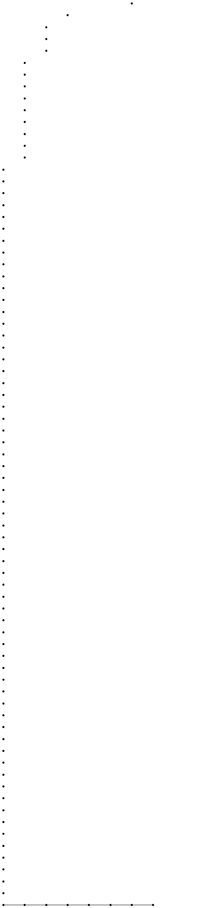
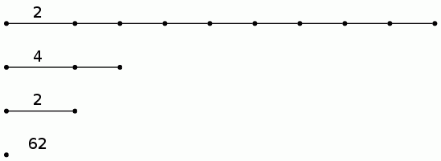
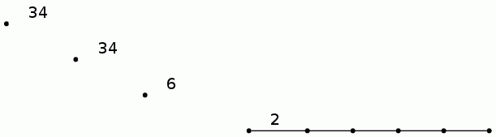
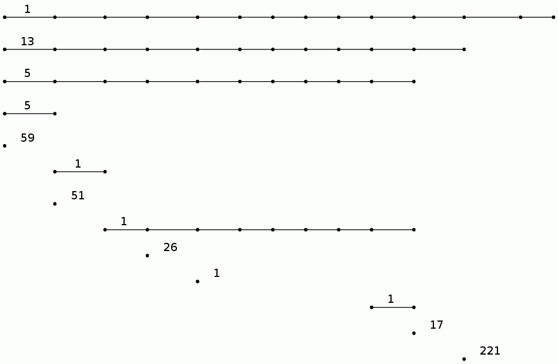
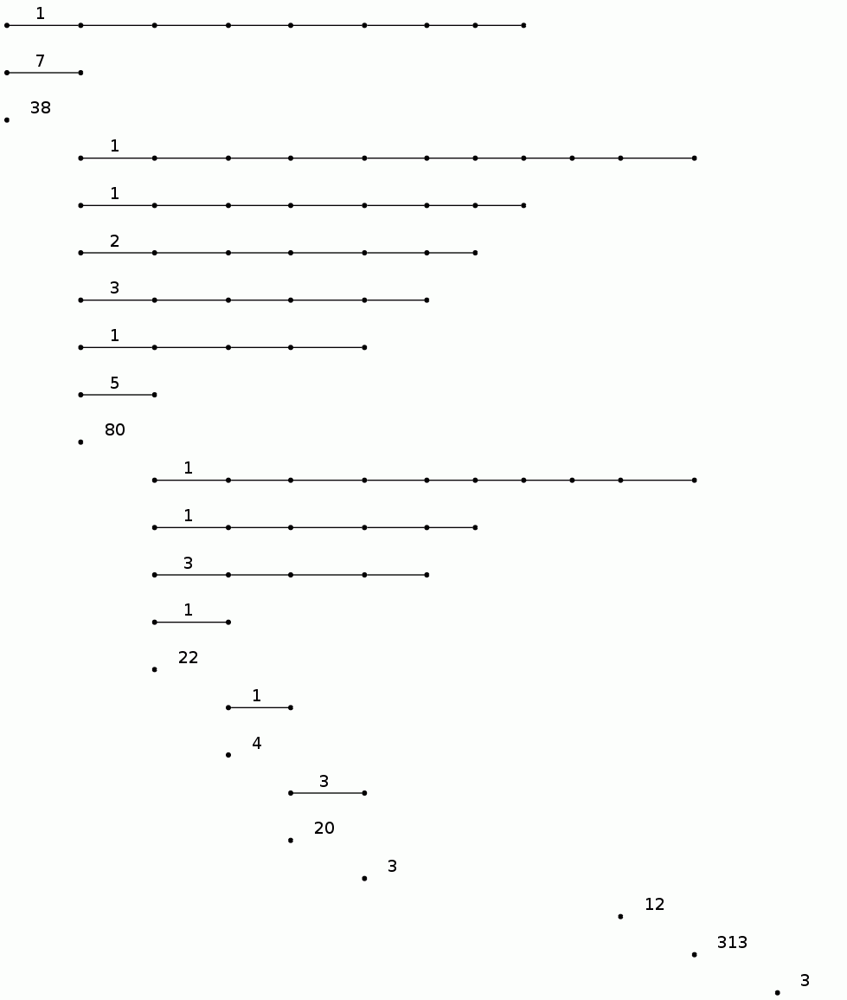
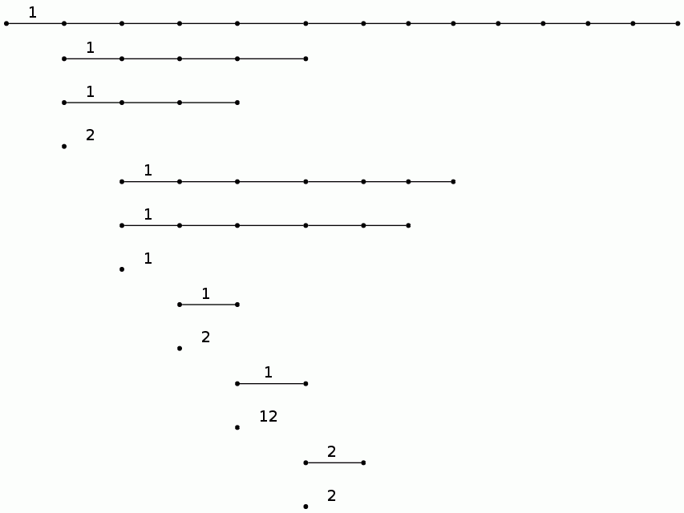
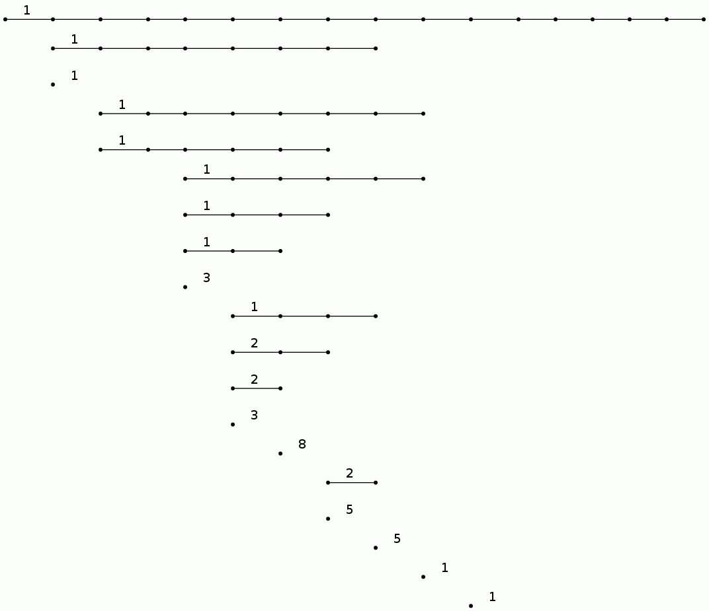
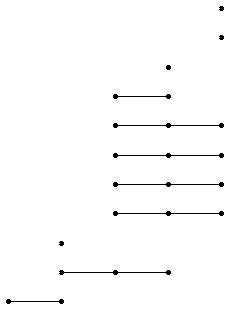
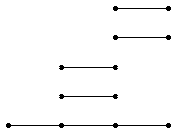

| Previous |
About HAP: Persistent Homology |
next |
A sequence of inclusions X1 --> X2 --> X3 --> ... --> Xk induces a sequence of homology homomorphisms which, in each degree n, determine a kxk matrix of ranks Pi,j (where for i>j we define Pi,j=0). This matrix is referred to as the n-th persistence matrix, over the field F, for the sequence of pure cubical complexes.
A possible scenario is that X1 is a sample from an unknown manifold M, and that each space Xi+1 is obtained by thickening Xi in some fashion. The hope is that the persistence matrices describe the shape of the manifold M from which X1 was sampled.

which, as we can see, was sampled (possibly with error) from an annulus. The following computations agree with this observation.
The following commands produce a sequence of thickenings for this data cloud and then compute the degree 1 persistence matrix over the field of rational numbers.
Pure cubical complex of dimension 2.
gap> T:=ThickeningFiltration(M,10);
Filtered pure cubical complex of dimension 2.
gap> P:=PersistentHomologyOfFilteredCubicalComplex(T,1);;

The following data
| v1 |
v2 |
... |
v399 |
v400 |
|
| v1 |
0 |
66 |
191 |
137 |
|
| v2 |
66 |
0 |
125 |
71 |
|
| ... |
|||||
| v399 |
191 |
125 |
0 |
54 |
|
| v400 |
137 |
71 |
54 |
0 |
is contained in a symmetric matrix in the file symmetricMatrix.txt . The following commands read this matrix, compute the filtered simplicial complex, and then compute the barcodes for 0-dimensional and 1-dimensional homology. These barcodes suggest that the data points were samples from a space with the homology of a disjoint union of two circles.
We view the barcodes in compact form, where a line with label n is used to denote n lines which start at the same point in the filtration and end at the same point in the filtration.
gap> S:=SymmetricMat;;
gap> G:=SymmetricMatrixToFilteredGraph(S,10,30);; #Take a filtration with length T=10, and discard any distances greater than 30.
gap> N:=SimplicialNerveOfFilteredGraph(G,2);;
gap> C:=SparseFilteredChainComplexOfFilteredSimplicialComplex(N);;
gap> P0:=PersistentHomologyOfFilteredSparseChainComplex(C,0);;
gap> P1:=PersistentHomologyOfFilteredSparseChainComplex(C,1);;
gap> BarCodeCompactDisplay(P0);

gap>BarCodeCompactDisplay(P1);


The 20 longish lines in the following barcode for the degree 0 persistent homology correspond to the 20 objects in the photo. The 14 longish lines in the following barcode for the degree 1 persistent homology correspond to the fact that 14 of the objects have holes in them. We again view the barcodes in compact form, where a line with label n is used to denote n lines which start at the same point in the filtration and end at the same point in the filtration.
Filtered pure cubical complex of dimension 2.
gap> P0:=PersistentHomologyOfFilteredCubicalComplex(F,0);;
gap> BarCodeCompactDisplay(P0);

gap> P1:=PersistentHomologyOfFilteredCubicalComplex(F,1);;
gap> BarCodeCompactDisplay(P1);
gap> P1:=PersistentHomologyOfFilteredCubicalComplex(F,1);;
gap> BarCodeCompactDisplay(P1);

For a protein backbone K, the degree 0 persistent homology of FK should contain useful information on the geometric shape of K.
The following commands compute this shape descriptor for the T.thermophilus 1V2X protein and the H.sapiens 1XD3 protein pictured on the previous page.
Reading chain containing 191 atoms.
gap> FK:=ConcentricallyFilteredPureCubicalComplex(K,10);;
gap> P:=PersistentHomologyOfFilteredCubicalComplex(FK,0);;
gap> BarCodeCompactDisplay(P);

gap>
K:=ReadPDBfileAsPureCubicalComplex("1XD3.pdb");;
Reading chain containing 243 atoms.
gap> FK:=ConcentricallyFilteredPureCubicalComplex(K,10);;
gap> P:=PersistentHomologyOfFilteredCubicalComplex(FK,0);;
gap> BarCodeCompactDisplay(P);

For a finite p-group we take homology coefficients in the field of p elements. The following commands compute and display the degree 3 homology barcode for the Sylow 2-subgroup of the Mathieu group M12.
gap> IdGroup(G);
[ 64, 134 ]
gap> P:=UniversalBarCode("UpperCentralSeries",64,134,3);;
gap> BarCodeDisplay(P);

For example, the following commands produce the degree 2 mod 2 homology LHS barcode for G the diherdal group of order 64 and N its centre.
gap> N:=Center(G);;
gap> R:=ResolutionNormalSeries([G,N],3);;
gap> C:=FilteredTensorWithIntegersModP(R,2);;
gap> P:=PersistentHomologyOfFilteredChainComplex(C,2,2);;
gap> BarCodeDisplay(P);

| Previous
Page |
Contents |
Next
page |